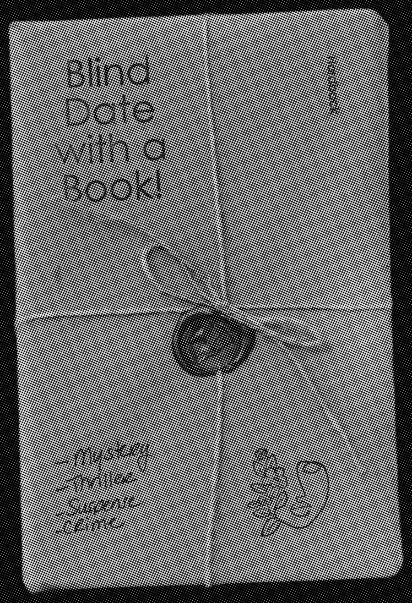
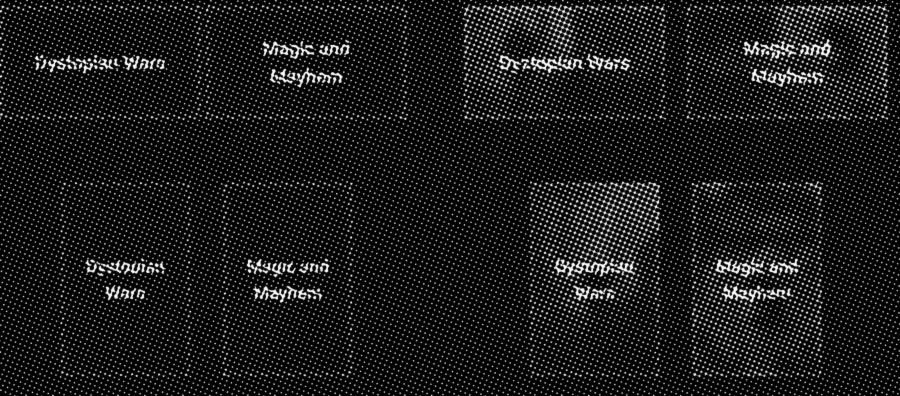

Curiosity didn’t kill the cat. It got more clicks. Surprise Rail is a new themed rail for HBO Max, built on tiles that hide the key art and sell the title in three words. A viewer with nothing in mind now has something to be curious about.
HBO Max had plenty to watch, but viewers still struggled to choose. Key art or a synopsis alone wasn’t enough. There needed to be a better reason to get users to stop scrolling.

I was walking through the Strand bookstore and saw a new display table: Blind Date with a Book. You don’t get the cover, but you get clues that let you say yes or no. I thought, “What if I could apply this idea to a rail?”

Rejected: Testing showed it broke people’s mental model. They couldn’t tell why titles were hidden. A skip-level review flagged the film-reel motif as overdone and not premium enough for HBO Max.
Chosen: One dedicated rail. One pattern to learn. Rest of browse stays familiar.
Rejected: Solid black. It was boring and gave no clue that anything was hidden.
Chosen: Frosted glass. Cause ya’ gotta tease a little. Testers could tell there was a title underneath. It was visually intriguing and borrowed design language of the HBO Max glass.
AI generates clues from three inputs: title metadata, the subpage it appears, and a copy guide with writing rules.
AI makes the idea scalable. Instead of writing every variation by hand, the system generates context-specific clues across the catalog.
The secret sauce is that the subpage indicates what the user wants. If the user is on the Comedy page, they want comedic themes. I adapted clues based on the user’s intent at time of browsing.
Chosen: 2-3 word thematic descriptors. Working with UX research, we found they were easiest to scan and had the greatest impact on decision-making.
Only titles within the subpage category can get recommended. I changed the rail heading based on the subpage so users know to expect something different.
“Blind Date with a [theme]” was a name I was attached to. It landed with 18–25s, but was misunderstood by older viewers. They read it literally and expected a movie with dating involved.
Rejected: “Blind Date with a [theme].” It didn’t land for all ages. It overran the title’s fixed width and took up two lines, which was atypical in the app.
Chosen: “Surprise [theme].” Short and sweet. If you were on the Home page, you would see this as a general “Surprise For Me” rail.
Designed across TV, desktop, and mobile. The concept was tested and presented to product, but it wasn’t picked up. If it was shipped, here are the metrics I would measure:
I’d work with engineering to collect data for both events. Then with product to determine if we should keep the rail, modify it, or retire it.
The Surprise Rail started as an idea. Research shaped it into a scalable, page-aware system that turned indecision into curiosity and curiosity into clicks.